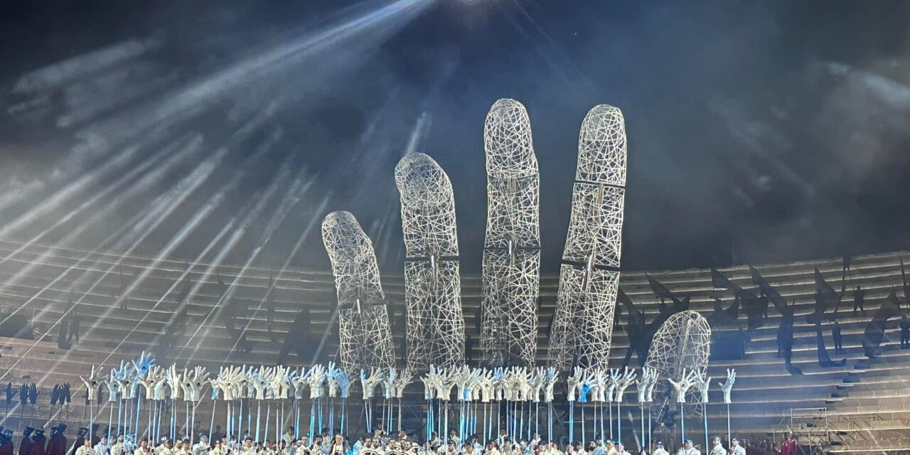
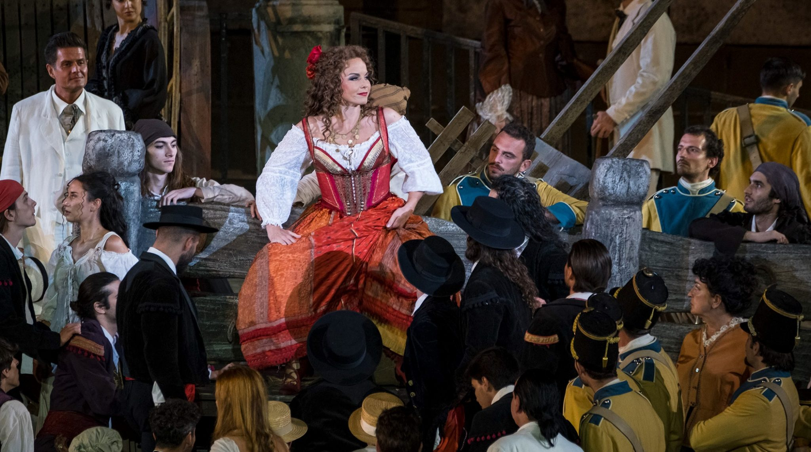
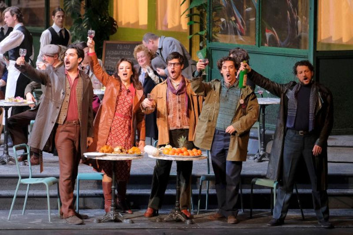
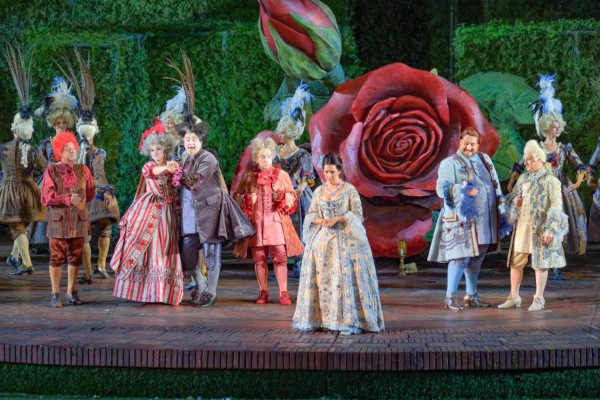
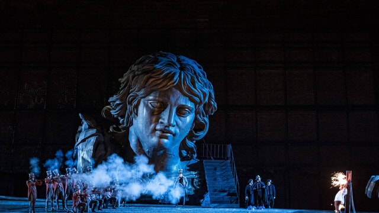
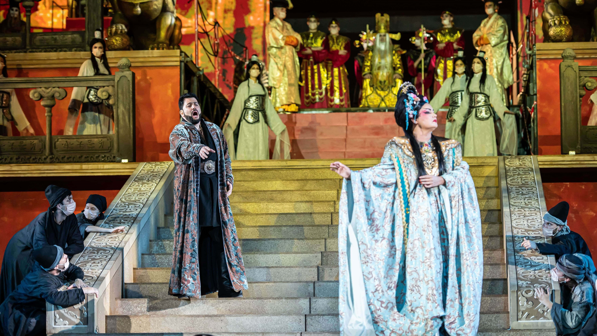

<!DOCTYPE html>
<html lang="it">
<head>
    <meta charset="UTF-8">
    <meta name="viewport" content="width=device-width, initial-scale=1.0">
    <title>Arena 101</title>
    <!-- Favicons -->
    <link rel="icon" type="image/x-icon" href="img/favicon.ico">

    <!-- Link to external CSS file -->
    <link rel="stylesheet" href="...">
    <!-- Bootstrap CSS -->
    <link href="https://maxcdn.bootstrapcdn.com/bootstrap/4.5.2/css/bootstrap.min.css" rel="stylesheet">
    <link rel="stylesheet" href="style.css/styles.css">
    <!-- Bootstrap Icons CSS -->
    <link rel="stylesheet" href="https://cdn.jsdelivr.net/npm/bootstrap-icons@1.10.0/font/bootstrap-icons.css">

<!-- STYLE -->
<style>

        .carousel {
            position: relative;
            width: 50%;
            overflow: hidden;
            margin-top: 100px;
            margin-bottom: 100px;
            margin-right: 150px;
            margin-left: 280px;
        }
        
        .carousel-images {
            display: flex;
            transition: transform 0.5s ease;
        }
        
        .carousel-image {
            max-width: 50%; 
            height: auto; 
            display: block;
            margin: 0 auto; /* Centra immagine al centro */
            padding: 30px; 
            object-fit: contain; /* per distorsione */
        }
        
        /* stile carousel control */
        .carousel-control {
            position: absolute;
            top: 50%;
            transform: translateY(-50%);
            background-color: rgba(0, 0, 0, 0.5);
            color: white;
            border: none;
            padding: 10px;
            cursor: pointer;
        }
        
        .carousel-control.prev {
            left: 10px;
        }
        
        .carousel-control.next {
            right: 10px;
        }
    </style>

<!-- HERO IMAGE STYLE -->
<style>
body, html {
    margin: 0;
    padding: 0;
    height: 100%;
    width: 100%;
    font-family: Georgia, serif;
}

.hero-image {
    background-image: url('img/arena_hero.jpg');
    height: 70vh; 
    background-position: center;
    background-repeat: no-repeat;
    background-size: cover;
    position: relative;
}

.hero-text {
    text-align: center;
    position: absolute;
    top: 50%;
    left: 50%;
    transform: translate(-50%, -50%);
    color: darkred;
}

.hero-text h1 {
    font-size: 50px;
    margin: 0;
}

.hero-text p {
    font-size: 20px;
    margin: 10px 0;
}

.hero-text button {
    padding: 10px 20px;
    font-size: 20px;
    background-color: #1d3557;
    color: #fff;
    border: none;
    cursor: pointer;
}

.hero-text button:hover {
    background-color: #457b9d;
}


</style>

</head>


<!-- START BODY HERE -->
<body>
    <!-- Content goes here -->
    <!-- Bootstrap JS, Popper.js, and jQuery -->
    <script src="https://code.jquery.com/jquery-3.5.1.slim.min.js"></script>
    <script src="https://cdn.jsdelivr.net/npm/@popperjs/core@2.6.0/dist/umd/popper.min.js"></script>
    <script src="https://maxcdn.bootstrapcdn.com/bootstrap/4.5.2/js/bootstrap.min.js"></script>


</body>
</html>

<!-- NAVBAR -->
<nav class="navbar navbar-expand-lg navbar-light bg-light">
    <a class="navbar-brand" href="#">ARENA 101</a>
    <button class="navbar-toggler" type="button" data-toggle="collapse" data-target="#navbarNav" aria-controls="navbarNav" aria-expanded="false" aria-label="Toggle navigation">
        <span class="navbar-toggler-icon"></span>
    </button>
    <div class="collapse navbar-collapse" id="navbarNav">
        <ul class="navbar-nav mr-auto">
            <li class="nav-item active">
                <a class="nav-link" href="#">Home<span class="sr-only">(current)</span></a>
            </li>
            <li class="nav-item">
                <a class="nav-link" href="#">Catalogo opere</a>
            </li>
            <!-- Dropdown menu -->
            <li class="nav-item dropdown">
                <a class="nav-link dropdown-toggle" href="#" id="navbarDropdown" role="button" data-toggle="dropdown" aria-haspopup="true" aria-expanded="false">
                    Altro
                </a>
                <div class="dropdown-menu" aria-labelledby="navbarDropdown">
                    <a class="dropdown-item" href="#">Linea del tempo</a>
                    <a class="dropdown-item" href="#"></a>
                    <a class="dropdown-item" href="#">Links utili</a>
                </div>
            </li>
        </ul>
        <!-- Search tool -->
        <form class="form-inline my-2 my-lg-0">
            <input class="form-control mr-sm-2" type="search" placeholder="Search" aria-label="Search">
            <button class="btn btn-outline-success my-2 my-sm-0" type="submit">Search</button>
        </form>
    </div>
</nav>


<!-- HERO IMAGE -->
<div class="hero-image">
  <div class="hero-text">
    <h1>ARENA DI VERONA 2024</h1>
    <p>Leggi i libretti delle opere in programma</p>
    <button><a href="Aida.html">Inizia</a></button>
  </div>
</div>


<div>
  <h2>IL PROGETTO</h2>
  <br/>
  <p>Il progetto vuole rendere accessibili i libretti delle opere proposte nel corso della centunesima edizione dell'Opera Festival dell'Arena di Verona a chiunque voglia leggerne i testi prima di godersi gli spettacoli. Le opere messe in scena nel corso della stagione estiva 2024 sono sei: Aida - nella sua duplice versione di Stefano Poda (regia) e Gianfranco de Bosio (regia) - Carmen, La Bohème, Il Barbiere di Siviglia, Tosca e Turandot.</p>
  <p>Vai alla sezione Informazioni e Links Utili</p>
</div>

<!-- OPERE -->
<div>
  <br/>
  <h2>LE OPERE</h2>
</div>


<!-- CAROUSEL --> 
<div id="carouselExampleIndicators" class="carousel slide" data-ride="carousel">
  <ol class="carousel-indicators">
    <li data-target="#carouselExampleIndicators" data-slide-to="0" class="active"></li>
    <li data-target="#carouselExampleIndicators" data-slide-to="1"></li>
    <li data-target="#carouselExampleIndicators" data-slide-to="2"></li>
  </ol>
  <div class="carousel-inner">
    <div class="carousel-item active">
      
      <div class="carousel-caption d-none d-md-block">
        <h5><a href="Aida.html">AIDA</a></h5>
        <p>Scopri l'opera regina dell’anfiteatro.</p>
      </div>
    </div>
    <div class="carousel-item">
      
      <div class="carousel-caption d-none d-md-block">
        <h5>CARMEN</h5>
        <p>Scopri l'opera dedicata a Carmen, la zingara ribelle.</p>
      </div>
    </div>
    <div class="carousel-item">
      
      <div class="carousel-caption d-none d-md-block">
        <h5>LA BOHEME</h5>
        <p>Scopri l'opera ispirata al romanzo di Henri Murger <em>Scènes de la vie de bohème</em>.</p>
      </div>
    </div>
    <div class="carousel-item">
      
      <div class="carousel-caption d-none d-md-block">
        <h5>IL BARBIERE DI SIVIGLIA</h5>
        <p>Scopri questo capolavoro rossiniano di cui è protagonista il furbo barbiere Figaro.</p>
      </div>
    </div>
    <div class="carousel-item">
      
      <div class="carousel-caption d-none d-md-block">
        <h5>TOSCA</h5>
        <p>Scopri un thriller lirico ambientato nella Roma del 1800.</p>
      </div>
    </div>
    <div class="carousel-item">
      
      <div class="carousel-caption d-none d-md-block">
        <h5>TURANDOT</h5>
        <p>Scopri l'opera ambientata nella suggestiva Città Proibita.</p>
      </div>
    </div>
  </div>
  <a class="carousel-control-prev" href="#carouselExampleIndicators" role="button" data-slide="prev">
    <span class="carousel-control-prev-icon" aria-hidden="true"></span>
    <span class="sr-only">Previous</span>
  </a>
  <a class="carousel-control-next" href="#carouselExampleIndicators" role="button" data-slide="next">
    <span class="carousel-control-next-icon" aria-hidden="true"></span>
    <span class="sr-only">Next</span>
  </a>
</div>


<!-- LINKS UTILI -->
<div>
  <h2>INFORMAZIONI E LINKS UTILI</h2>
</div>


<!-- COLLAPSE -->
<div class="container mt-3">

    <p class="mt-3">FAQs</p>
    <div id="accordion">
        <div class="card">
            <div class="card-header" id="headingOne">
                <h5 class="mb-0">
                    <button class="btn btn-link" type="button" data-toggle="collapse" data-target="#collapseOne" aria-expanded="true" aria-controls="collapseOne">
                        Dove posso acquistare i biglietti per gli spettacoli?
                    </button>
                </h5>
            </div>
            <div id="collapseOne" class="collapse" aria-labelledby="headingOne" data-parent="#accordion">
                <div class="card-body">
                    Puoi acquistare i biglietti sul sito ufficiale di <a href="https://www.arena.it/" target="_blank">Fondazione Arena di Verona</a>. 
                </div>
            </div>
        </div>
        <div class="card">
            <div class="card-header" id="headingTwo">
                <h5 class="mb-0">
                    <button class="btn btn-link collapsed" type="button" data-toggle="collapse" data-target="#collapseTwo" aria-expanded="false" aria-controls="collapseTwo">
                        Dove si trova l'Arena, e come posso arrivarci? 
                    </button>
                </h5>
            </div>
            <div id="collapseTwo" class="collapse" aria-labelledby="headingTwo" data-parent="#accordion">
                <div class="card-body">
                    Guarda la <a href="https://www.arena.it/arena-opera-festival/preparati-allopera/dove-siamo/" target="_blank">mappa</a>, oppure clicca sui seguenti link del sito ufficiale di Fondazione Arena per trovare consigli su <a href="https://www.arena.it/arena-opera-festival/preparati-allopera/dove-parcheggiare/" target="_blank">parcheggi</a> e <a href="https://www.arena.it/arena-opera-festival/preparati-allopera/come-arrivare/" target="_blank">percorsi</a> per raggiungere l'Arena. 
                </div>
            </div>
        </div>
        <div class="card">
            <div class="card-header" id="headingThree">
                <h5 class="mb-0">
                    <button class="btn btn-link collapsed" type="button" data-toggle="collapse" data-target="#collapseThree" aria-expanded="false" aria-controls="collapseThree">
                        Esistono altri spettacoli, oltre a quelli della stagione estiva?
                    </button>
                </h5>
            </div>
            <div id="collapseThree" class="collapse" aria-labelledby="headingThree" data-parent="#accordion">
                <div class="card-body">
                    Il Teatro Filarmonico di Verona offre spettacoli al chiuso nelle stagioni altre da quella estiva. Visita il <a href="https://www.arena.it/teatro-filarmonico-verona/" target="_blank">sito</a> per scoprire di più. 
                </div>
            </div>
        </div>
    </div>
</div>


<!-- TIMELINE VA QUA -->
<div>
  <h2>Timeline</h2>

   <iframe src='https://cdn.knightlab.com/libs/timeline3/latest/embed/index.html?source=1B9XwaO9rdSxWgowh--VOuDTkmvqKn-Z_wHaAorFKDEM&font=Default&lang=it&initial_zoom=2&height=520' width='70%' height='520' webkitallowfullscreen mozallowfullscreen allowfullscreen frameborder='0'></iframe>

</div>

</br>


<!-- FOOTER -->
<footer class="bg-light text-center text-lg-start">
  <div class="container p-4">
    <div class="row">
      <div class="credits">
          ARENA 101 è un progetto sviluppato per il corso "Digital Humanities" (a.a. 2021/2022) del corso di laurea magistrale in Filologia Classica dell'Università Alma Mater Studiorum di Bologna
        </div>
    
        <small>Designed by Lavinia Bonfatti Sabbioni</small>
    
    
    </div>
  </div>
  <div class="text-center p-3 bg-dark text-white">
    &copy; 2024 Arena 101. La trascrizione dei libretti è stata fatta dall'autrice a partire dai libretti di <a href="https://www.operalibretto.com/en/home-eng/" target="_blank">Opera Libretto</a>. Informazioni di tipo generale (metadati descrittivi) provengono dal sito di <a href="https://www.arena.it/" target="_blank">Fondazione Arena</a>.
  </div>
</footer>


